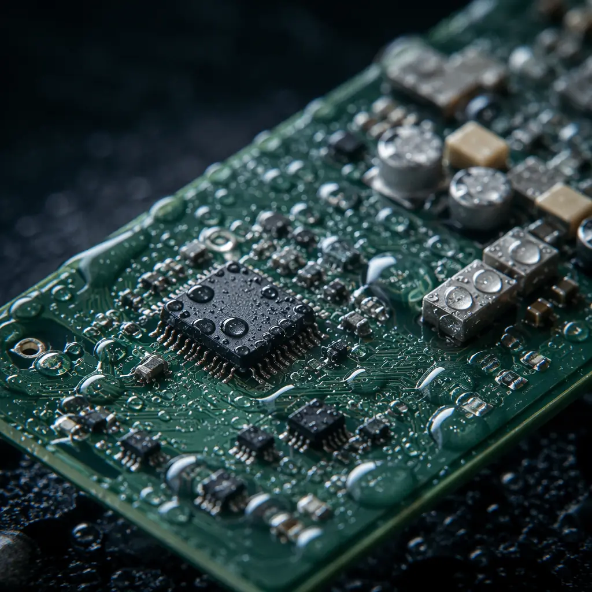
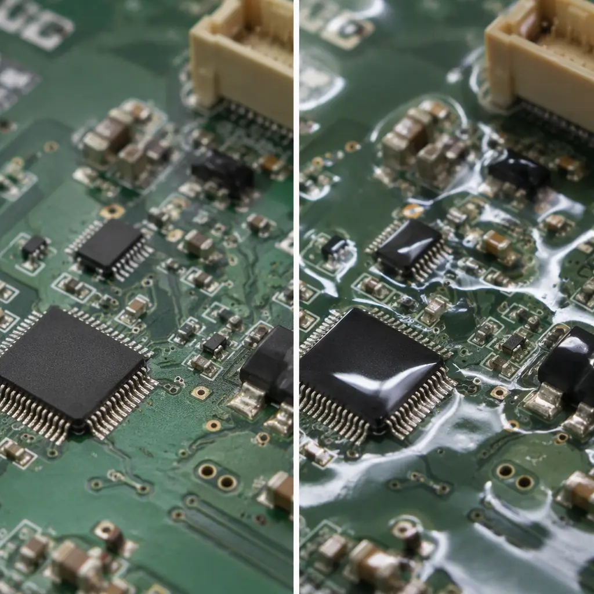

Food processing plants present one of the most aggressive environments for electronics in industrial manufacturing. Every 24 hours, production equipment endures high-pressure hot water jets at 80–100 bar, caustic chemical foam cleaning, and thermal shocks as surfaces cycle from freezer temperatures to steam sterilization. A standard PCB — even one rated for industrial use — will fail within weeks under these conditions. The failure mode is almost always moisture ingress: water penetrates through connector housings, wicks along cable insulation, and condenses inside enclosures during cooling cycles, creating conductive paths that short-circuit control boards. When that PCB controls a meat processing conveyor or a dairy pasteurization line, the cost isn't just a replacement board — it's a full production line shutdown, a potential FDA reportable incident, and thousands of dollars in lost product.
At Huaxing PCBA, we manufacture washdown-rated PCBs with the same process discipline we apply to IATF 16949 automotive safety electronics. Our IP69K-validated assembly line integrates parylene conformal coating, stainless steel enclosure sealing, and full material traceability — capabilities that most general-purpose PCB manufacturers don't offer. When your PCB must survive daily 80°C caustic washdown and keep a food production line running, the manufacturing standards are fundamentally different from commercial or even standard industrial electronics.

The Washdown Environment — What Makes Food Processing PCBs Different
To understand why food processing PCBs require specialised manufacturing, you need to appreciate what the board actually endures during a single cleaning cycle. Food plants operate under sanitation protocols that would destroy unprotected electronics in minutes. Here's what a PCB inside a meat processing conveyor controller experiences every 8 to 12 hours:
High-Pressure Washdown: 80–100 bar Water Jets at 80°C
Sanitation crews use industrial pressure washers delivering 80–100 bar (1,160–1,450 psi) of water at 80°C, directed at equipment from multiple angles. This isn't a gentle rinse — it's a directed jet that can force water past any seal that isn't specifically engineered for IP69K. Even IP67-rated enclosures (tested for 1m submersion) can fail under high-pressure spray because the dynamic pressure at the nozzle is fundamentally different from static submersion pressure. The PCB inside must be protected at both the enclosure level and the board level — because enclosures do eventually leak, and when they do, the board must survive.
Chemical Exposure: Caustic CIP Solutions, Peracetic Acid, and Chlorine-Based Sanitizers
Clean-in-Place (CIP) systems circulate sodium hydroxide (2-3% concentration at 75-85°C) through processing equipment daily. Sanitizing follows with peracetic acid (PAA) at 100-200 ppm or chlorine solutions at 50-100 ppm. These chemicals are aggressive oxidizers and strong bases — they attack PCB conformal coatings, corrode exposed copper, and degrade solder mask adhesion. A PCB that survives water exposure alone can fail within weeks when these chemicals are introduced. Conformal coating selection becomes critical: see our conformal coating guide for chemical resistance data across coating types.
Thermal Cycling: -30°C to +85°C in Minutes
Consider a dairy processing line: the PCB in a valve controller goes from a -30°C freezer environment to an 85°C steam sterilization cycle within the same hour. This 115°C temperature swing creates enormous mechanical stress on solder joints as the CTE mismatch between FR-4 laminate, copper traces, and component packages causes repeated expansion and contraction. Standard solder joints accumulate fatigue cracks after several hundred such cycles. For food processing, SAC305 lead-free solder with proper thermal relief pad design is mandatory — not optional — to withstand these thermal excursions without joint failure.
100% RH Condensation and 24/7 Operation
When a cold processing room door opens to a warm corridor, condensation forms instantly on every surface — including inside supposedly sealed enclosures. This is the phenomenon that catches designers off guard: the enclosure was sealed at room temperature, but as the internal air cools, its relative humidity rises until water condenses directly onto the PCB surface. Breather vents with hydrophobic membranes help equalize pressure without admitting liquid water, but the PCB itself must be coated to survive the condensation that inevitably occurs. Proper PCB cleaning before coating is essential — flux residue under conformal coating creates corrosion cells that accelerate failure in high-humidity environments.
Vibration and Mechanical Stress from Production Machinery
Conveyor motors, industrial mixers, packaging machines, and centrifugal separators generate continuous vibration that transmits through equipment frames to every attached PCB. Over a three-year operating life at 24/7 duty cycle, a PCB experiences roughly 95 million vibration cycles. Connector solder joints, heavy components (transformers, large capacitors), and board mounting points are the primary failure locations. Industrial control PCB design rules — including reinforced mounting holes, strain relief on connectors, and adhesive staking of large components — must be applied as standard practice, not optional extras.
Key Takeaway: The failure cost of a food processing PCB isn't just the board — it's an entire production line shutdown, potential product contamination, and an FDA-reportable incident if food safety is compromised. One PCB failure can cost $50,000–$150,000 in lost production, plus regulatory consequences. Manufacturing to IP69K standards from the start costs a fraction of one shutdown event.
IP69K Protection for PCB Assemblies
IP69K is the highest rating in the IEC 60529 ingress protection standard that uses a test method relevant to washdown environments. Unlike IP68 (continuous submersion), IP69K specifically tests against high-pressure, high-temperature water jets — exactly what food processing equipment faces during sanitation. Achieving IP69K at the enclosure level requires meticulous sealing, but critically, the PCB inside must also be protected against the condensation and micro-leakage that real-world enclosures eventually experience.
IP69K Defined: 100 bar Water Jet at 80°C From Four Angles
The IP69K test specification (ISO 20653 for road vehicles, adopted by food equipment standards) requires a nozzle delivering 100 bar (1,450 psi) water pressure at 80°C, positioned 100–150mm from the device under test. Four spray angles are applied for 30 seconds each — 0°, 30°, 60°, and 90° relative to the vertical axis — while the device rotates on a turntable at 5 rpm. The pass criterion: no water ingress that could impair function. This test is fundamentally more aggressive than IP67 submersion testing because high-pressure spray can force water through seal interfaces that static pressure cannot penetrate. Any PCB intended for washdown environments must have its enclosure validated to this standard — not just claimed.
Enclosure-Level Sealing: 316L Stainless Steel With Silicone O-Ring Gaskets
Food-grade enclosures use AISI 316L stainless steel — not the cheaper 304 grade — because 316L contains 2-3% molybdenum, providing superior resistance to chloride pitting from CIP chemicals and salt-based brines. Enclosure seams must be continuously TIG-welded and ground smooth (Ra ≤0.8 μm surface finish) to eliminate crevices where bacteria can harbor. The access cover uses a continuous silicone O-ring gasket in a machined groove with 25-30% compression — not a flat gasket that can shift during assembly. Breather vents with PTFE hydrophobic membranes (IP69K-rated, such as Gore PolyVent) allow pressure equalization during thermal cycling without admitting liquid water. Any PCB enclosure that doesn't specify 316L stainless and continuous O-ring seals will eventually fail in a food plant.
PCB-Level Conformal Coating: Parylene C vs. Silicone
Enclosure sealing alone is not sufficient — the PCB itself must be conformally coated to survive the condensation that occurs during thermal cycling. Parylene C applied at 25μm thickness provides a pinhole-free moisture barrier deposited via chemical vapor deposition (CVD), achieving complete coverage including under components. It offers excellent chemical resistance to CIP solutions and peracetic acid. For designs where reworkability is needed, silicone conformal coating (applied at 50-75μm) provides good moisture protection with the ability to locally remove and replace coating for component rework. Our PCB conformal coating guide provides a full comparison of parylene, silicone, acrylic, polyurethane, and epoxy coatings for food processing environments.
Connector Selection: IP69K-Rated M12/M23 Circular Connectors
Standard D-sub or rectangular connectors have no hope of surviving washdown. IP69K-rated M12 (for sensors and data) and M23 (for power and signal bundles) circular connectors with gold-plated contacts are the industry standard for food processing equipment. These connectors use O-ring seals at the panel interface and compression seals on the cable entry, achieving the IP69K rating when properly mated. Gold plating (minimum 0.8μm over 2.0μm nickel underplate) prevents contact corrosion in high-humidity environments. The PCB footprint for these connectors must include enlarged annular rings and teardrop reinforcement at pad-to-trace junctions — the mechanical stress of connecting and disconnecting field wiring over years of service will lift pads on standard footprints.
Cable Gland Entries: Multiple Compression Seals and Drip Loops
Every cable entering the enclosure is a potential water ingress path. IP69K-rated cable glands use multiple compression seals — typically a primary neoprene compression seal on the cable jacket plus a secondary O-ring seal at the enclosure interface. Cable entries must enter from the bottom of the enclosure only — never from the top or sides where water can run along the cable directly into the gland. Drip loops (a U-shaped cable section below the entry point) must be maintained on every cable to prevent water from tracking along the cable surface into the gland. Inside the enclosure, cable entries must include a sealed compartment separate from the PCB cavity — a simple plate with cable glands bolted to a bare enclosure wall creates a direct path for water that breaches the gland to reach the PCB.
Key Takeaway: IP69K at the enclosure level is only half the solution. The PCB inside must survive condensation cycling — conformal coating and drainage design prevent moisture from pooling on the board. Even the best enclosure seal will eventually allow humid air inside; the question is whether your PCB can tolerate it when that happens.
Chemical Resistance — Surviving CIP and Sanitizer Exposure
Food processing PCBs face chemical exposure that no other industrial sector matches. The combination of strong bases (CIP caustic), strong oxidizers (peracetic acid, chlorine), and high temperature creates a chemically aggressive environment that attacks organic conformal coatings and accelerates metal corrosion. Selecting the right coating is a decision that determines whether the PCB lasts 3 months or 10 years.

| Coating Type | CIP Acid Resistance | Caustic Resistance | Max Temp | Repairability |
|---|---|---|---|---|
| Parylene C | Excellent | Excellent | 150°C | Poor — must strip |
| Silicone | Good | Excellent | 200°C | Good — local removal |
| Acrylic | Poor | Fair | 125°C | Excellent — solvent strip |
| Polyurethane | Good | Good | 130°C | Fair |
| Epoxy | Fair | Good | 150°C | Poor |
The coating selection decision for food processing PCBs comes down to two practical choices: parylene C for maximum protection, or silicone for repairability. Parylene C provides the best barrier against both caustic and acid exposure, making it the preferred choice for PCBs in CIP-intensive environments where the board cannot be easily accessed for replacement. The downside is repairability — parylene must be mechanically or plasma-etched to remove, and re-coating requires returning the board to a CVD chamber. Silicone coating offers nearly equivalent caustic resistance with the advantage of local removal for component rework using a soldering iron — important for high-value controller boards where in-situ repair is expected. Acrylic, despite its popularity in consumer electronics, should not be used in food processing because it degrades rapidly (swelling and delamination) under caustic CIP exposure. For a full analysis of coating application processes, see our PCB conformal coating guide.
Hygienic PCB Enclosure Design Principles
Hygienic design for food equipment is codified in standards from EHEDG (European Hygienic Engineering & Design Group) and 3-A Sanitary Standards. These standards dictate enclosure geometry, surface finish, and mounting methods to ensure the equipment can be cleaned effectively and doesn't harbor microbial growth. The principles apply directly to how the PCB enclosure is designed and mounted.
No Horizontal Surfaces — 30° Minimum Slope on All Top Surfaces
Horizontal surfaces collect water, product residue, and cleaning chemicals — creating ideal conditions for bacterial growth. Every external surface of a food-grade PCB enclosure must have a minimum 30° slope to ensure liquids drain off completely. This includes enclosure tops, connector hoods, and mounting brackets. Flat rectangular enclosures commonly used in industrial electronics violate this requirement — the top surface pools water after washdown. Sloped enclosure designs or external drain channels must be incorporated. Inside the enclosure, the PCB itself should be mounted at a slight angle (3-5°) rather than perfectly horizontal so that any condensation that does form runs to a defined drain point rather than pooling on components.
Standoff Mounting — ≥20mm Clearance From Mounting Surface
EHEDG guidelines require a minimum 20mm clearance between the equipment and the mounting surface to allow complete spray coverage during cleaning. This means the PCB enclosure cannot be flush-mounted against a wall or machine frame — it must be spaced off using sanitary standoffs with smooth, cleanable surfaces. The standoffs themselves must be continuously welded to the mounting surface (no threaded connections that create crevices) or use hygienic clamp mounts. The 20mm gap ensures that CIP spray reaches behind the enclosure, preventing the accumulation of food residue in shadow zones.
No Exposed Fasteners — Captive Screws With Sealed Caps
Hex-head bolts and Phillips screws have crevices and recesses that trap food particles and resist cleaning. Food-grade enclosures must use captive screws with sealed domed caps, or better yet, sanitary tri-clamp (also known as tri-clover) mounting that eliminates threaded fasteners entirely. Tri-clamp connections use a gasket compressed between two flanges by an external clamp ring — the clamp can be removed without tools, and there are no threads exposed to the product zone. For PCB enclosures that must be opened for service, the access cover should use captive quarter-turn fasteners with smooth, domed heads and silicone sealing washers — never standard machine screws.
Cable Routing — Bottom-Entry Only With Drip Loops on All Entries
Cable entries from the top or sides of an enclosure create a direct path for washdown water to follow the cable into the enclosure. All cables must enter from the bottom only, and each cable must have a drip loop — a U-bend below the entry point — so that water running down the cable drips off at the lowest point rather than entering the gland. Inside the enclosure, the cable entry compartment must be physically separated from the PCB cavity. A sealed barrier with individual cable pass-throughs prevents water that breaches a gland from reaching the PCB. This is a common failure point in improperly designed food equipment electronics — a single leaking cable gland floods the entire enclosure because there's no internal compartmentalization.
PCB Materials for Food Safety Compliance
Food processing equipment falls under regulations that govern materials in contact with food — and while the PCB itself is inside a sealed enclosure, the materials used in its construction have implications for food safety compliance. The EU's Regulation 1935/2004 on food contact materials and FDA 21 CFR requirements influence laminate selection, surface finish chemistry, and solder alloy composition — even for electronics that are not in direct food contact.
Laminate Selection: Halogen-Free FR-4 (IEC 61249-2-21)
Standard FR-4 laminate contains brominated flame retardants (typically tetrabromobisphenol-A, TBBPA) that are restricted under EU food contact material regulations due to concerns about leaching and bioaccumulation. Halogen-free FR-4 laminate compliant with IEC 61249-2-21 replaces brominated flame retardants with phosphorus-based alternatives, eliminating this regulatory concern. For PCBs in food processing equipment, specifying halogen-free laminate is a proactive step that future-proofs compliance as food contact material regulations tighten. See our halogen-free PCB compliance guide for a detailed comparison of halogen-free vs standard FR-4 materials and their applications.
Surface Finish: ENIG Preferred — No Lead, No Tin Whisker Risk
Electroless Nickel Immersion Gold (ENIG) is the recommended surface finish for food processing PCBs. It provides a flat, solderable surface with excellent corrosion resistance and shelf life. Critically, it contains no lead (unlike HASL) and eliminates the tin whisker risk associated with immersion tin finishes. Tin whiskers — microscopic conductive filaments that grow spontaneously from pure tin surfaces — can cause short circuits years into service life. In food processing environments with thermal cycling and high humidity, whisker growth is accelerated. ENIG's nickel barrier layer prevents this mechanism entirely. ENEPIG (adding a palladium layer) provides even better wire bonding capability if required.
Solder: SAC305 Lead-Free Mandatory — RoHS + Food Contact
Lead-free solder is not optional for food processing PCBs — it's required by both RoHS and food contact material regulations. SAC305 (Sn96.5/Ag3.0/Cu0.5) is the industry-standard lead-free alloy with a melting point of 217-220°C. For PCBs that experience the extreme thermal cycling of food processing environments, SAC305's mechanical properties — specifically its higher creep resistance compared to SnPb — make it the superior choice even disregarding regulatory requirements. Our lead-free vs leaded solder comparison covers the reliability implications in detail.
Silkscreen: Must Survive Repeated Washdown Without Delamination
Standard epoxy-based solder mask and silkscreen are generally adequate for food processing if properly cured. However, the silkscreen ink must be specified as chemical-resistant — standard UV-curable inks can soften and delaminate after repeated exposure to CIP chemicals at elevated temperatures. The silkscreen should be a secondary consideration after conformal coating, since the coating covers it, but any exposed silkscreen areas (connector pin labels, test points, board revision markings) must use chemical-resistant ink formulations. Thermal-cure solder mask provides better chemical resistance than UV-cure formulations.
Regulatory Standards for Food Equipment Electronics
Food processing equipment electronics operate under a multi-layered regulatory framework that extends well beyond standard IPC manufacturing standards. PCB procurement managers need to understand which standards apply to their specific market and equipment type — because the compliance burden cascades down to PCB manufacturing requirements.
FDA 21 CFR Part 11 — Electronic Records for CIP Cycle Validation
When a PCB in a CIP controller logs wash cycle temperature, chemical concentration, and duration data, those electronic records fall under FDA 21 CFR Part 11 if the equipment is used in FDA-regulated food production. This regulation requires that electronic records be trustworthy, reliable, and equivalent to paper records — which means the PCB's data logging system must include audit trails, authority checks, and device checks. On the PCB level, this translates to secure non-volatile memory for log storage, real-time clock with battery backup, and tamper-evident design features. The PCB manufacturer's lot traceability system (IPC-1782 compliant) must provide the documentation chain that FDA inspectors expect when reviewing electronic record systems.
EU 1935/2004 — Food Contact Materials Regulation
EU Regulation 1935/2004 applies to all materials and articles intended to come into contact with food. While a PCB inside a sealed enclosure is not in direct food contact, the regulation's principle that materials must not transfer their constituents to food in quantities that could endanger human health has implications for PCB materials selection. If the enclosure seal fails — and in food processing, eventually it will — the PCB materials become potential contaminants. This is why halogen-free laminates, lead-free solder, and chemically stable conformal coatings matter: they reduce the risk profile if the worst case occurs. For equipment placed in the "food zone" (directly above exposed product), the enclosure design must prevent any PCB material from reaching food even in the event of catastrophic enclosure failure — typically through secondary containment or physical separation.
EHEDG Guidelines — Hygienic Equipment Design and Cleanability Verification
The European Hygienic Engineering & Design Group (EHEDG) publishes design guidelines that have become the de facto global standard for hygienic food equipment. EHEDG Doc 8 (Hygienic Equipment Design Criteria) and Doc 13 (Hygienic Design of Equipment for Open Processing) specify surface finish requirements (Ra ≤0.8 μm for product contact surfaces), radii requirements (minimum 3mm internal radii on corners to prevent residue accumulation), and drainability requirements. PCB enclosures must comply with these geometry requirements. EHEDG also offers a cleanability certification test where equipment is contaminated with a food soil containing bacteria, cleaned using a standard CIP protocol, and then tested for residual contamination — enclosures that can't be cleaned effectively fail this test regardless of how well the PCB inside is protected.
3-A Sanitary Standards — US Dairy and Food Processing Equipment
3-A Sanitary Standards govern the design and fabrication of equipment used in dairy and food processing in the United States. 3-A Standard 88-00 (Machine Leveling Feet and Supports) and Standard 68-00 (Sensors and Sensor Fittings) directly affect how PCB enclosures and their mounting hardware are designed. 3-A certification requires that the equipment design is reviewed and approved by a 3-A Certified Conformance Evaluator (CCE), and the manufacturing process is subject to ongoing inspection. While the PCB itself doesn't need 3-A certification, the enclosure system that houses it does — and the PCB manufacturer must be able to document materials and processes to support the enclosure manufacturer's 3-A submission. Our PCB certifications and compliance guide covers the documentation requirements for regulated industry submissions.
Real-World Applications
Food processing covers a wide range of environments, each with specific challenges for PCB reliability. The following applications represent the most demanding scenarios where washdown-rated PCBs are essential — not optional.
Meat Processing Conveyor Control — Daily 80°C Foam Cleaning, IP69K Required
Meat processing plants operate under the most aggressive sanitation protocols in the food industry. Conveyor control PCBs are subjected to daily foam cleaning with chlorinated alkaline detergents at 80°C, followed by peracetic acid sanitizing. The USDA FSIS (Food Safety and Inspection Service) mandates that all equipment surfaces be cleanable to a microbiological standard — which means the conveyor controller PCB enclosure must be designed to the same hygienic standard as the conveyor frame. IP69K-rated M12 connectors for sensor inputs and M23 connectors for motor power are standard. Parylene C conformal coating (25μm) is the typical specification for these boards because the cost of accessing and replacing a failed PCB in a production conveyor line far exceeds the coating cost.
Beverage Filling Line Sensors — CIP Chemical Exposure, 24/7 Operation
Beverage filling lines operate continuously — a filling line producing 60,000 bottles per hour cannot tolerate unplanned downtime. Sensor PCBs that monitor fill levels, cap placement, and label alignment are exposed to CIP chemicals (typically 2% NaOH at 80°C for 30 minutes, followed by acid rinse) 2-3 times per day. The PCB form factor is typically small (30×50mm sensor heads) with limited space for conformal coating. Silicone coating is preferred here over parylene because sensors are high-wear items that may need component-level repair or recalibration — and silicone's local removability supports field service without returning the sensor to a CVD chamber.
Dairy Pasteurization PLC — Thermal Cycling and Steam Exposure
Dairy pasteurization involves heating milk to 72°C for 15 seconds (HTST) or 138°C for 2 seconds (UHT), followed by rapid cooling to 4°C. The PLC that controls pasteurizer temperature, flow diversion valves, and holding tube timing experiences thermal cycling from ambient to 85°C (steam cleaning) and back multiple times per day. These PLC PCBs are typically 6-8 layer designs with dedicated power and ground planes to maintain signal integrity across the temperature range. ENIG surface finish with SAC305 solder is standard. The enclosure must be 316L stainless with continuous O-ring sealing and bottom-entry cable glands — any steam ingress into the PLC enclosure condenses on the board and causes immediate malfunction, which in dairy processing means a full day's production held pending quality re-testing.
Bakery Oven Controllers — High Ambient Temperature Plus Flour Dust (IP6X Dust Tight)
Industrial bakery ovens operate at 200-260°C internally, with the controller PCB mounted in a compartment that reaches 65-85°C ambient. The PCB faces two simultaneous challenges: high temperature degradation of components and conformal coating, and the ever-present flour dust that is both combustible and electrically conductive when damp. The enclosure must achieve IP6X dust-tight rating (no dust ingress) in addition to IP69K water protection — a dual requirement that demands careful gasket design because dust sealing and water sealing use different gasket compression requirements. High-Tg FR-4 (Tg ≥170°C) is the minimum laminate specification; polyimide may be necessary for boards mounted closest to the oven chamber. Conformal coating selection must prioritize high-temperature stability — silicone coatings with 200°C continuous rating are appropriate, while acrylic coatings would degrade at these temperatures.
Food processing electronics represent a convergence of multiple harsh-environment requirements — chemical resistance, thermal cycling, high-pressure washdown, and hygienic design — that no other industrial sector demands simultaneously. At Huaxing PCBA, our IATF 16949-certified manufacturing system applies the same failure-prevention discipline to food processing PCBs that we use for automotive safety electronics. From parylene conformal coating in our dedicated coating line to IPC-A-610 Class 3 assembly on halogen-free laminates, every board shipped includes full material traceability, coating thickness inspection reports, and IP69K enclosure integration support. Contact our engineering team with your food processing equipment specifications for a manufacturing assessment — including conformal coating recommendation and enclosure sealing review.